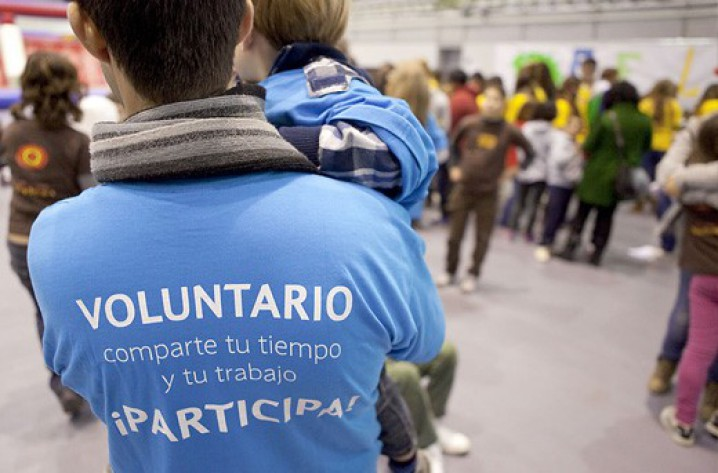

Más de 15.000 niños en España viven en residencias y centros de acogida en riesgo de exclusión social
Nuestro objetivo es mejorar la sociedad del mañana, apoyando a los niños, adolescentes y jóvenes de hoy.
“Esto solo es posible con la participación de un gran equipo de voluntarios que cada año crece y estamos trabajando continuamente para que sigamos avanzando.”
Actuamos en:
- Barcelona
- Madrid
- Valencia
- Sevilla
En el 2017 conseguimos:
Atender a más de
1800
menores
Atender a más de
900
menores

¿De dónde provienen estos menores?
Son hijos de padres que les han retirado la tutela por no poder cuidarlos como se lo merecen.
¿Qué ofrecemos?
Los centros en los que viven tienen cubiertas las necesidades básicas. Hay otras muchas cosas que el centro no les puede ofrecer.
Soñar Despierto ofrece ayudas para que los niños puedan ir al dentista u otros médicos que conlleven un gasto económico.
Ofrecemos también ayuda en la parte socio-educativa con refuerzo escolar y actividades extraescolares.
Para que los sueños de estos menores se hagan realidad llevamos a cabo diferentes actividades.
Realizamos programas socio-educativos para dar apoyo afectivo y educación.
En días señalados celebramos eventos festivos para que los menores disfruten de un día especial.
